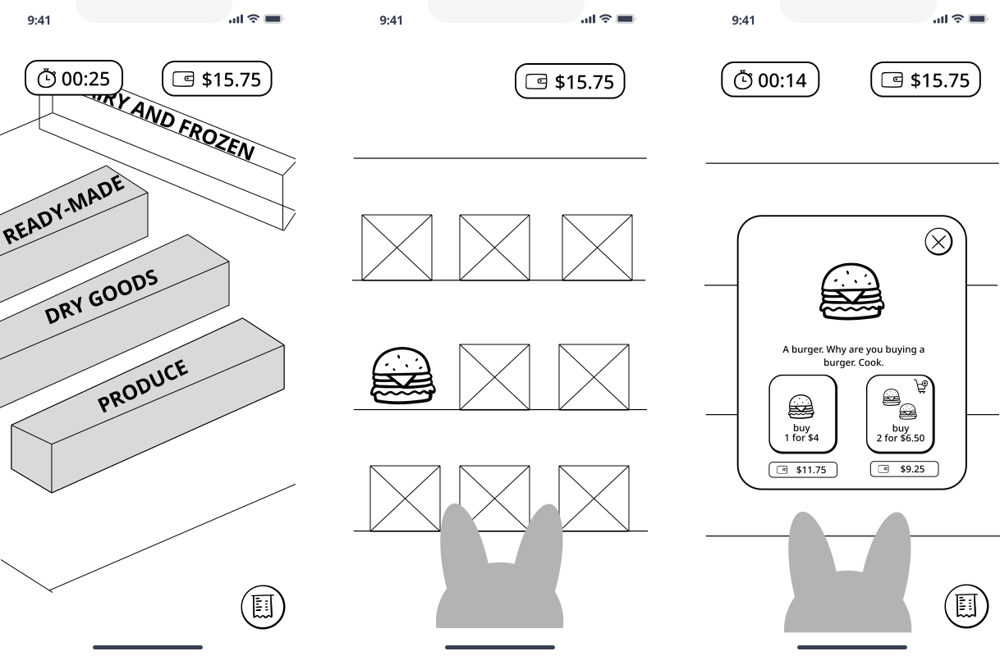

Lo-fi exploration
Gaming-inspired layouts with progress, challenges, and gentle onboarding.


“Cooking for one feels like too much work.”
“I miss cooking with people.”
“Recipes online are overwhelming.”
Chow Club started from a simple observation: during the shift into college, cooking—something that should feel comforting—often became intimidating or forgotten.
With designer Anieka, we explored how gamification and community could make cooking approachable again.
Peer interviews
Affinity themes
motivation, friction, community
Students want progress,
not another chore list.
Long recipes and cooking solo killed momentum; small wins and clear steps mattered more than gourmet outcomes.
Shared meals and low-stakes challenges brought accountability—cooking felt less lonely when it felt like play.
We sketched game-like flows—bright onboarding, streaks, and recipe unlocks—then pressure-tested them in lo-fi before adding visual polish.
Swipe or scroll sideways for more

Gaming-inspired layouts with progress, challenges, and gentle onboarding.

Leveling up through completed recipes—motivation without turning meals into grind.
Break recipes into wins users can finish between classes—not marathon sessions.
Light rewards and unlocks reinforce habit without punishing missed days.
Shared challenges bring the feeling of cooking with friends—even remotely.
Reframe cooking as a story worth savoring—not a checklist for “adulting.”
Prototype screens and motion studies — placeholder video slot above in future passes.
Hi-fi UI, usability tests, and a clickable prototype—drop assets into this shell when ready.
Figma embed or device capture — placeholder below.